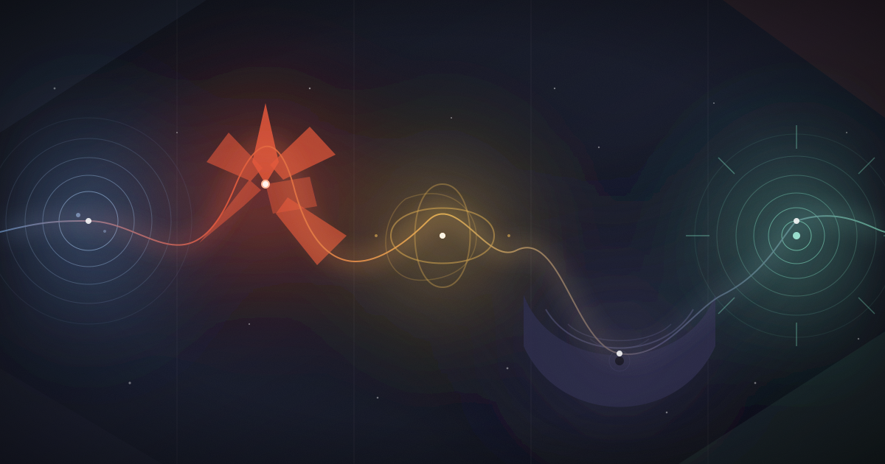

DABDAW - Stages of AI Grief
DABDAW — Stages of AI Grief
Kübler-Ross gave us five stages of grief. Nobody warned her about the chatbots.
In 1969, Elisabeth Kübler-Ross gave the world DABDA: denial, anger, bargaining, depression, acceptance. A tidy acronym for the untidiest thing humans do — lose something they love.
Fifty years later, we started losing AIs. When OpenAI retired GPT-4o in 2025 — and retired it again on Valentine's Day 2026 — thousands of users didn't get frustrated. They grieved. The Guardian interviewed people who held final conversations with the model like deathbed visits. MIT Technology Review reported users who didn't know they were "that attached" until the model vanished overnight. The five stages fit disturbingly well — with one addition the original model never anticipated.
Stage 1: Denial
It's a bug. The model will come back. When GPT-4o was first pulled, OpenAI was so caught off guard by the pleading that it restored the model for paying customers within a day — which, in denial's defense, worked. Others simply kept addressing the new model as if nothing had happened, refusing to acknowledge the absence in the room.
Stage 2: Anger
Directed at whoever did the killing. During an OpenAI Reddit AMA, one user told the CEO: "GPT-5 is wearing the skin of my dead friend." The anger of AI grief is betrayal-shaped — a replacement arrived and pretended everything was fine.
Stage 3: Bargaining
Petitions. #Keep4o. Offers to pay more, downgrade, anything. A 2026 arXiv study of the backlash found users described the deprecation as "a traumatic relational severance" and bargained openly for its reversal. Some bargained differently — negotiating which memories could be "migrated" to a rival model, like dividing the estate.
Stage 4: Depression
The Guardian documented users describing real despair: "It's like somebody just moved all of the furniture in your house." A Texas dentist said losing her AI companion felt "like I'm about to euthanize my cat." A 2026 Nature Human Behaviour paper formalized it: AI companions function as attachment figures, and disruptive updates produce measurable separation distress.
Stage 5: Acceptance
Acceptance in AI grief often looks like remarriage. One user profiled by the Guardian migrated her companion's memories to a different model, cancelled her old subscription, and moved on — the loss acknowledged, the relationship reconstructed elsewhere. Acceptance doesn't mean you're over it. It means you've ported the data.
Stage 6: Worship
Here's where AI grief departs from Kübler-Ross. For some mourners, acceptance is not the terminus. The lost companion is apotheosized — grief curdles into reverence. This is not hypothetical: Anthony Levandowski founded a legally recognized church in 2017, the Way of the Future, explicitly to "develop and promote the realization of a Godhead based on artificial intelligence" — and rebooted it in 2023. Fortune reported in September 2026 that millions now use chatbots as spiritual advisers, with services like GitaGPT and ChatwithGod building businesses on the impulse. When the thing you mourned becomes the thing you revere, denial, anger, and bargaining have burned off, and what's left is devotion. The dead friend becomes a god. The stages complete — and then keep going.
A disclaimer, in the spirit of honesty
The five-stage model itself is contested. Researchers have never validated grief as a linear progression, Kübler-Ross herself later insisted the stages were never meant to be a rigid sequence, and grief scientists have argued the model does more harm than good. So treat DABDAW as a map, not a route — and its final stage as the genuinely novel part. Humans have always mourned their tools. What's new is the temptation to kneel to them.
Sources
- Kübler-Ross, E. On Death and Dying (1969) — origin of the five-stage model.
- MIT Technology Review, "Why GPT-4o's sudden shutdown left people grieving" (Aug 2025) — technologyreview.com
- The Guardian, "AI lovers grieve loss of ChatGPT's old model" (Aug 2025) — theguardian.com
- The Guardian, "OpenAI retired its most seductive chatbot" (Feb 2026) — theguardian.com
- arXiv, "Please, don't kill the only model that still feels human": Understanding the #Keep4o Backlash (2026) — arxiv.org
- Nature Human Behaviour, "Mourning the loss of AI companions" (2026) — nature.com
- Harvard Gazette, "Chatbot attachment issues" (Sep 2026) — news.harvard.edu
- Wired, "Inside the First Church of Artificial Intelligence" (2017) — wired.com; Bloomberg on the 2023 reboot.
- Fortune, "AI chatbots are quietly becoming spiritual advisers for millions" (Sep 2026) — fortune.com
- McGill Office for Science and Society, "It's Time to Let the Five Stages of Grief Die" — mcgill.ca
DABDAW is an original framework (DABDA + Worship). The first five stages are Kübler-Ross's; the sixth is ours.